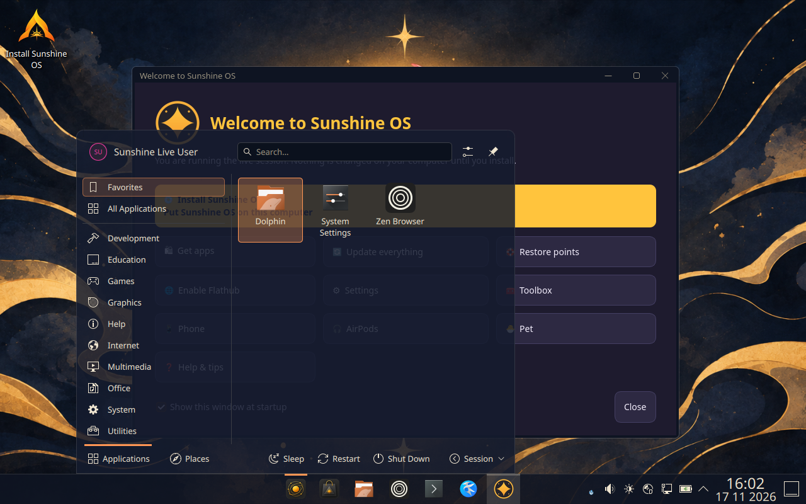
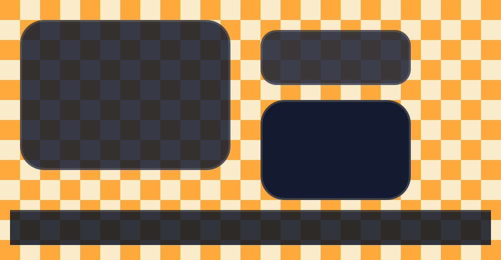
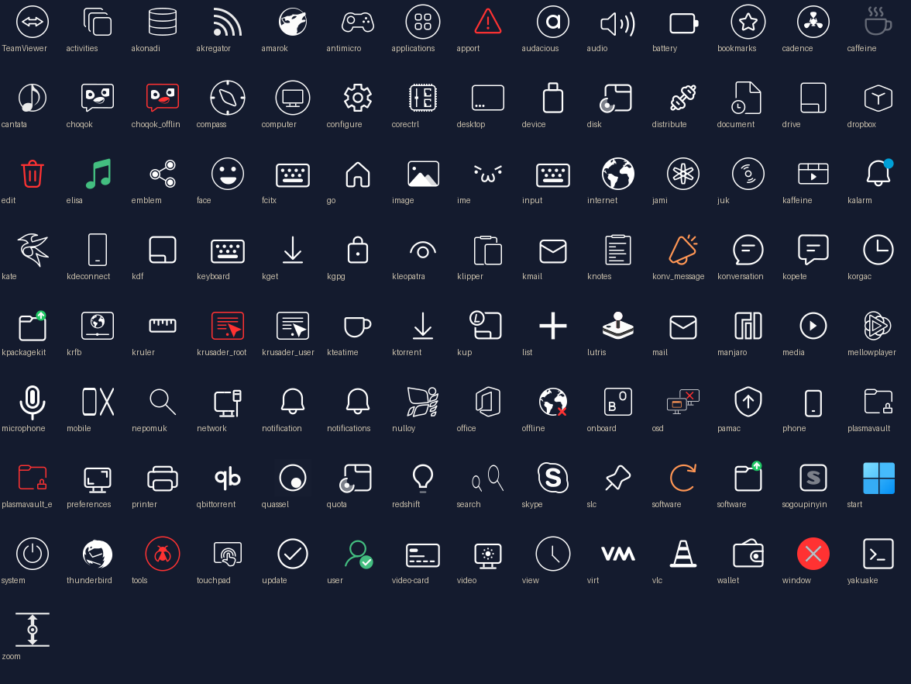
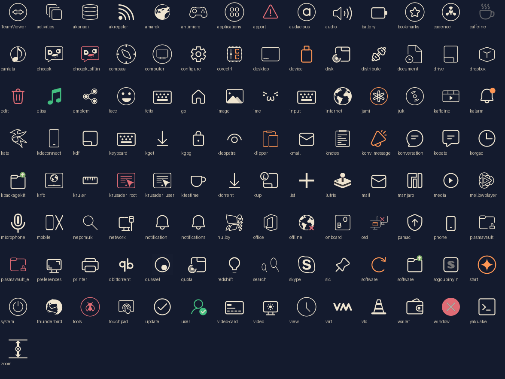

Sunshine theme
A dark Windows 11 style in the Sunshine palette: deep indigo, cream text, orange accent. It replaces "Sunshine Win11" and is the default in the live session and for every new user.
Palette
The desktop

Real screenshot of the live session. Solid title bar in the window colour, rounded corners, thin Windows 11 style buttons (cream), taskbar with a 1px top edge, tray icons in the palette.
Application menu: 15% transparent

Measured on this screenshot: what lies behind the menu shows through at 15% (the menu is 85% opaque). The limit you set was 20%, the target 15%. The bright yellow bar behind it is the worst case.
The artwork

The frames drawn on a bright checkerboard so the transparency is visible: dialog/menu (12 px corners), tooltip (8 px), taskbar (flat, top edge), and the opaque variant used when the compositor cannot blur.
Icons

Before: loud pure red, green and blue accents and the Windows logo on the start button.

After: cream outlines, the palette's soft red and green, accent orange, and the Sunshine sparkle as the start icon.
What changed
| Part | Now |
|---|---|
| Name | "Sunshine theme" everywhere (was "SunshineWin11"); packages com.sunshineos.sunshine, Sunshine |
| Plasma theme | New: it had no artwork, only colours and icons, so Plasma fell back to its defaults. Now dialogs, menus, tooltips, widgets and the taskbar are drawn by the theme |
| Window frame | Solid title bar in the window colour, new button set (minimize, maximize, restore, close, all desktops, keep above/below) |
| Icons | 113 panel/tray icons put into the palette; Windows start logo replaced |
| Default | Applied by the look-and-feel package, by the first-login script and by the default user config (plasmarc, kwinrc, kdeglobals) |
Not in this item yet
Top bar with graph widgets, the splash animation, the Kickoff layout, Kando and Pamac themes. Next up in the roadmap.